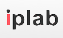

こんにちは世界！
Rails Girls が奈良にやってきます！二日間のワークショップの間に、Ruby on Railsのすてきな世界を体験してみませんか？ワークショップは無料です。
募集は締め切らせていただきました。ご応募ありがとうございました。参加者の皆様には３月３日までにご連絡致します。
Hello world!
Rails Girls comes to Nara! During the free two-day workshop we'll dive into the magical world of Ruby on Rails.
Applications are now closed.
概要 コーチに教えてもらいながらプログラムを設計して、プロトタイプを作り、コーディングします。
You learn designing, prototyping and coding with the help from our coaches.
必要なもの 自分のノートパソコン、やる気とキラリと光るイマジネーションを持ってきてください！
You need your own laptop, curiosity and a sprinkle of imagination!
手助けをしたい？ボランティアやRailsのコーチを探しています。メールを送って〜
Want to help? We are looking for volunteers and Rails coaches. Email us :)
| 18:00 - 20:00 |
インストレーション・フェスト必要なソフトウェア・ツールをインストールすると同時に参加者同士が知り合いなる日てす。Tryruby.orgでRubyを紹介します。 |
|---|---|
| 20:00 ~ |
コーチ・ディナーティナータイムにはコーチとともに、例題となるアプリケーションに一通り目を通します。 |
| 18.00 - 20:00 |
Installation partyGet know the attendees a little bit before hand. Bring your laptop if you can, so we can install Ruby on Rails for you. We'll also introduce Ruby via Tryruby.org during this time.Where: NAIST - L3 |
|---|---|
| 20.00 ~ |
Coach dinnerAll of the coaches are welcome to our coach dinner, where we'll go through the program for the next day. |
| 9:00 - 10:00 |
レジストレーション、コーヒーとお茶。金曜日に参加できなかったり、Ruby on Railsのインストールトラブルが残っていれば、この時間に解決しましょう。終わった人は金曜日に話すことが出来なかった参加者と知り合いになりましょう。 |
|---|---|
| 10:00 - 10:20 |
開会一日の流れの説明。スポンサーから一言。 |
| 10:20 - 10:30 |
質問、休憩 |
| 10:30 - 12:30 |
ワークショップ ― ウェブアプリ構築はじめてのウェブアプリにトライしてみよう！ |
| 12:30 - 13:30 | ランチ |
| 13:30 - 15:00 |
ワークショップ今日作ったウェブアプリを世界に公開したり、自分流のウェブアプリに変えてみよう！ |
| 15:00 - 15:30 |
コーチによるライトニングトークス |
| 15:30 - 16:30 |
ワークショップ今日作ったウェブアプリを世界に公開したり、自分流のウェブアプリに変えてみよう！ |
| 17:00 - |
アフター・パーティ参加者、コーチ、スタッフによるパーティです。ワークショップで聞き損ねたことやRubyやRailsのこと、ステップアップの方法など、コーチに気軽に質問してみましょう。 |
| 9:00 - 10:00 |
Registration, coffee and installation festDuring the morning we’ll install Ruby on Rails on your computer. |
|---|---|
| 10:00 - 10:20 |
WelcomeOutline of the day & word from sponsors |
| 10:20 - 10:30 |
Questions and toilet break |
| 10:30 - 12:30 |
WORKSHOPJumpstart your first web application |
| 12:30 - 13:30 | Lunch |
| 13:30 - 15:00 |
WORKSHOPExtend your application. |
| 15:00 - 15:30 |
Lightning talks from coaches |
| 15:30 - 16:30 |
WORKSHOPExtend your application. |
| 17:00 - 19:00 |
AfterpartyOpen for everyone, meet cool people interested in tech. |
参加申し込みは締め切らせていただきました。
たくさんのご応募ありがとうございました。
締め切り:２月１４日
参加了承の連絡:３月日
会場:
奈良先端科学技術大学院大学 地図
〒630-0192 奈良県生駒市高山町8916番地の5 情報科学研究科L３
教授言語: 日本語と英語
Applications closed: February 14th
Acceptances informed: March 3rd
Language: Japanese and English
Rails Girls Nara is co-organized with our awesome partners.
Want to help? We're looking for partners & sponsors for the non-profit event! Email us!
 IPLab studies the foundation and systematization of the Internet meta system to enable continuous development for the Internet. The lab engages in constructing the next generation networks through research.
TSAJ or Thai Students' Association in Japan under the Royal Patronage was initiated in 1897 when the first batch of Thai students arrived Japan. They were supported by the scholarship from the King of Thailand, which was later known as the King`s scholarship.
参加費はどのくらいかかりますか？ 無料です。申し込むときにはわくわくした気持ちだけあればいいです。
どのような人が参加するのでしょうか？ コンピュータを使ったことがある女性ならだれでも参加できます。 これまでに開催されたRails Girlsイベントには様々な年齢の女性がやってきました。 ご自分のノートパソコンをお持ちください。
男性も参加できますか？ 参加できます。ただし、必ずウェブアプリを作りたがっている女性と一緒に参加してください。 申し込み人数が多い場合はお断りすることがあります。
プログラミングの経験があります。手伝うことはできますか？ Rails Girls New ではコーチを担当してくれる人を捜しています。 次回以降の RailsGirls でコーチを担当したいという方は連絡先からお問い合わせ下さい。
How much does the workshop cost? Nothing, it's free! You just need to be excited!
Who is this aimed for? Women of any age with basic knowledge of working with a computer. We’ve had people of all ages taking part. Please bring your laptop.
Can men attend? Yes, but you need to be accompanied by an interested lady. Also, girls are given a priority.
I know how to program - How can I help? We’re also looking for people to be coaches. We’ll have a two-three hour workshop before the event to walk you through the curriculum. Email us